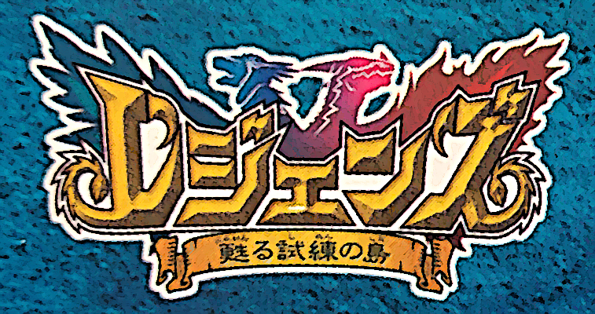
Doesn't eat. Doesn't sleep. Just emulates.
After putting so much time into my last adventure with the Mobile Adapter GB, I thought I'd spend the rest of 2018 just relaxing during the end of the year. You know, celebrate my birthday, go see Spider Man: Into The Spiderverse, and enjoy Chirstmas with the family. But, as it turns out I just can't stop, not even for a little bit. Immediately after the Mobile Adapter GB, I jumped out of my comfort zone and started researching an obscure, unemulated Gamecube accessory. I managed to figure out how it works, but that's a story for another day. As soon as I'd finished that, I went straight to something else I'd been interested in for quite a while. My planned downtime swiftly spiraled into yet another quest to emulate the unknown. No respite for this poor soul, I suppose.
Most people are familiar with Skylanders and Nintendo's Amiibos. Both feature collectible figurines that can be used in certain games to unlock new characters or content. Additionally, the figurines have data inside them that can be updated. Essentially, your toys could not only play games, they could level up, grow, and evolve. While these modern implementations are widely known, few are aware of earlier efforts in Japan to do the same thing on the GBA. There were actually two franchises that capitalized on connecting figurines to the handheld console: Bouken Yuuki Pluster World from Takara, and Legendz from Bandai. Both companies are no strangers to marketing and selling toys, so one can imagine a bit of rivalry between the two at the time. Although Pluster World launched first, Legendz arguably became more popular. Bandai managed to produce no less than 103 Legendz figurines (called Soul Dollz) as well as other extensive merchandise. On the other hand, I've only been able to track down 3 figurines used with the Pluster World games. There's also a small but dedicated fan community for Legendz, but I haven't seen one for Pluster World. At any rate, I decided to look into Legendz first.
The two Legendz games, Yomigaeru Shiren no Shima (translated and shortened here to "Isle of Trial") and Sign of Nekrom were released in 2004 and 2005 respectively. Both are basically monster training adventures where players fight with creatures called Legendz. Legendz are trapped inside crystal-like structures called Soul Dollz. Using a device called a Talispod or Talisdam, the Soul Dollz are "reborn" into Legendz. Bandai released Talispods and Talisdams as separate accessories where you could raise and train your Legendz. These toys came first, with the GBA games shortly following in its footsteps. While the Talispod and Talisdam featured small black and white LCD screens, Isle of Trial and Sign of Nekrom allowed the Legendz to appear in full color with intricate sprites and pixel art. The Soul Dollz readily interface with the Talispods and Talisdams, however, another accessory was necessary to allow Soul Dollz to communicate with the GBA. This device, known as the Soul Doll Adapter, is a special pod that links to the GBA's serial port. It has a slot for the Soul Doll and a latch to secure it in place. The Soul Doll Adapter itself has a very similar look and feel compared to Skylander's Portal of Power, albeit on a much smaller scale.
Unfortunately, as is the case with many of these obscure games that never saw western releases, there isn't a lot of information online about Legendz on the GBA. I'd only heard of it because I came across an interesting post on the Game Boy subreddit years ago. The story, characters, and even basic gameplay are absent on such sites like GameFAQs. Most of my research beforehand involved watching random bits of playthroughs on YouTube. More importantly, there's a notable lack of details regarding the most interesting feature of these games: using the Soul Doll Adapter. I only managed to find just a single, now-deleted video actually demonstrating the Soul Doll Adapter in action, and even that I only stumbled upon by accident. Aside from a recent blog entry from DeJapan (which reads more like an advertisement given the links) and sparse wiki entries, solid, reliable data on Legendz just doesn't exist. Once again, I found myself dealing with video games and hardware that the ages had seemingly forgotten. Bandai has long since abandoned one of the most innovative ideas to come out of the GBA era. In order to preserve this unique piece of history, it falls on people like me to pick up what they left behind.
In search of legends
As usual, the first real step towards emulating the Soul Doll Adapter is to actually obtain one. While it would be possible to brute-force my way by disassembling the code for the Legendz games, that's far from the best route. That's sort of a "nuclear option" I reserve for when it may be impossible to test games under real-world conditions (like pretty much all of the Mobile Adapter GB games, since the game servers are no longer available). Live hardware tests typically yield the most accurate information, and it's often far faster than picking through rows and rows of raw CPU instructions. Additionally, it helps me build up an impressive collection of exotic Game Boy accessories. The Legendz games aren't exactly frequent items that pop up on eBay all the time. A couple of loose carts for Isle of Trial or Sign of Nekrom appear every now and then, but the real deal is the special Complete-In-Box edition of both games. Each comes with the game as well as a Soul Doll Adapter, plus a free Soul Doll called Hexadragon. Between the time of writing this (end of January 2019) and June of 2018, I only saw 5 of such listings. The Soul Doll Adapter itself is rather uncommon, but not really expensive. Although these special editions don't show up a lot, others aren't exactly scrambling to buy them.
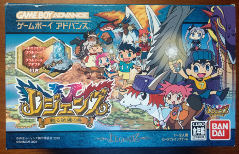 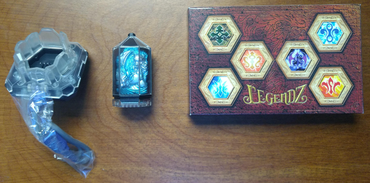
The special CIB editions come with larger than normal boxes to fit the Soul Doll Adapter and the Hexadragon Soul Doll.
At any rate, I acquired mine around August. Back then I was far too busy with the Mobile Adapter GB to touch Legendz, but around mid-December I formally began investigating the hardware. It's best to understand how these sorts of devices work firsthand, so I played around with the game and tested out the Soul Doll Adapter using Hexadragon. Both Isle of Trial and Sign of Nekrom have options ( ドールしょきか, or Doll Initialization) that use the adapter to read back basic data such as the level of the Legendz, its owner, and its nickname. This mode can also reformat the Soul Doll data if the player desires. Doll Initilization is very useful since it requires no game save and can be accessed immediately after the title screen. During the initialization, the Soul Doll Adapter connects to the GBA, the Soul Doll is placed and locked inside, and then the game starts communications. On a real GBA, there wasn't much to do or see in this mode, but it did give me a good reference for what GBE+ should do once it started emulating the adapter.
This was my first time working with specialty hardware for the GBA that hadn't ever been emulated before. All of my work in previous Edge of Emulation articles have been for the DMG or GBC. Additionally, while GBE+ had robust support for serial communications for the DMG and GBC, those same features in the GBA core were barebone at best. Despite these challenges, I pushed forward. While I just talked about the benefits of testing real hardware, sometimes running games through an emulator can reveal a lot, such as what memory is accessed, what MMIO registers are manipulated, and what sorts of interrupts are triggered. Unlike the DMG and GBC, the GBA has multiple configurable modes for the serial port. First, I had GBE+ log which mode the Legendz games used when entering Doll Initialization. I was hoping it'd be something simple, like the so-called Normal 8-bit mode, which operates in a manner similar to the older Game Boy models. Instead, Legendz uses what's called General Purpose mode. The Link Cable has 6 wires inside; 1 is for voltage, 1 is for ground, and the other 4 are for data (Serial In, Serial Out, and two flags called SD and SC). General Purpose mode allows for these 4 lines to be directly altered and read. In effect, this is low-level networking by manually controlling output along these wires.
Using General Purpose mode brings up two issues. One problem is that the underlying protocol could be anything. It could rely on custom stop signals and use odd data lengths such as 4-bits, 9-bits, or whatever it wants. The other concern is that the protocol itself could be very obfuscated. Due to its nature, General Purpose mode is often used to transmit data serially, or 1 bit at a time. At a minimum, this way would take 8 transfers to send 1 byte. With that data split across so many transfers, it becomes hard to see what's really happening. In short, unless someone knows what they're really looking at, General Purpose mode is an absolute headache to debug. Even so, the only way to truly figure out the Soul Doll Adapter was to examine the data it shared with the GBA.
I had two options: make homebrew software to capture the data, or use a ROM hack to do so. At first I chose to use homebrew with my GBA flashcart. With GBE+, I logged some of the transfers the Legendz games sent to the Soul Doll Adapter. I programmed a small ROM file to send those same transfers and record the responses. After much experimentation, I didn't find any results useful for emulation. As it turns out, GBE+ had only logged a tiny portion of all the transfers the games send, thus I only received a tiny portion of the correct responses. I wasn't sure how many transfers were required by the Soul Doll Adapter since GBE+ quit logging things after the game detected a communications error. I changed strategy and went for a ROM hack, since this would be significantly less prone to error. The goal of the hack was to inject code that would read the value of each transfer, store that in the game's save data, then return execution to the original code. It's a relatively straightforward modification with the hardest parts being the placement of the new code and jumping to and from it.
After some fine-tuning, I put the hacked ROM on my flashcart, loaded up Isle of Trial, and went through the Soul Doll Initialization process. As expected, I captured the data the GBA received from the Soul Doll Adapter. Although I had no clue what that data represented, I could use it with GBE+ to at least get Soul Doll Initialization working. My plan was to have GBE+ read the recorded data from a file every time it made a transfer, and then return those values to the emulated GBA. That should have been enough for a basic Soul Doll Adapter. Two things prevented me from executing this successfully. First, I had to implement a sort of "echo mode" in GBE+. The Soul Doll Adapter seemed to wait for a specific start signal before it could talk to the GBA. Prior to receiving that start signal, it remained inactive, largely echoing whatever the GBA sent with only a couple of exceptions. This task proved easy, and to my surprise, finishing just the echo mode was enough to get the Soul Doll Initialization to "work" in some sense. It seemed to recognize a valid Soul Doll, but it was categorized as an "Unknown Legendz". While that development wasn't exactly the progress I was looking for, it showed that I was on the right track. The second hurdle was just getting GBE+ to identify the start signal and switch from echo mode to reading the data file. Once I had adjusted everything properly, I managed to get the emulated Soul Doll Adapter to accept the data for Hexadragon.
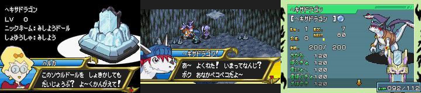
Hexadragon is actually pretty important. Without him, you can't get past this cave in Isle of Trial.
Once people begin playing either Isle of Trial or Sign of Nekrom, they come upon a certain part early in the story where they must use the Soul Doll Adapter to summon Hexadragon. If another Soul Doll is used, the game refuses and asks for Hexadragon. Without Hexadragon, it is impossible to advance any further in the Legendz games unless players resort to cheat codes or importing save files from later on in the game. Until this advancement in GBE+, emulators had to use those two solutions. Now, however, an emulated Soul Doll Adapter can bring Hexadragon to the player just as the game intended. From a preservation point of view, I believe this is signficant. Once this hardware fades away, both Legendz games would have been virtually unplayable on their own. The Soul Doll Adapter and Hexadragon Soul Doll are already hard enough to track down, so it's not beyond belief to suggest that they might one day disappear.
A growing doll collection
As previously mentioned, Bandai released a staggering 103 Soul Dollz. For the purpose of preserving the Legendz games, I needed to extract the data for more Soul Dollz. The games can be played from start to finish with Hexadragon alone, but that's pretty dull, and it doesn't really let people experience everything the games had to offer. I didn't think it was reasonable for me to purchase all 103 Soul Dollz on my own, but I could at least start the process of collecting a few and dumping the data. I ordered a pack of 3 Soul Dollz. A lot of these Soul Dollz are grouped into sets, and I happened across a Soul Dollz Reborn Set #3 at an agreeable price. This set contained the Legendz Yeti, Goblin, and Volcano Kingdragon, and it was brand-new despite being almost 15 years old. As a result, the data I dumped would be fresh and untouched. I could have bought individual Soul Dollz, but I would have had no idea if they'd been used in a Talispod or Talisdam before, which could possibly affect any information I extracted.
 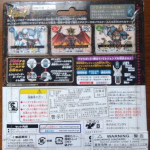 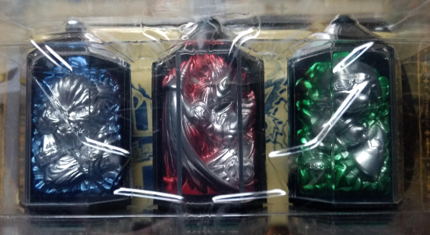
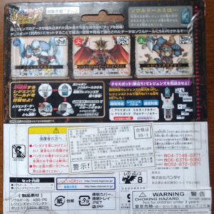 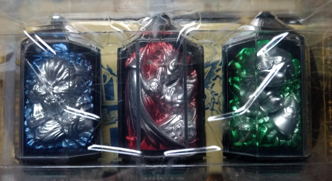
It may seem like a shame to rip open such a pristine collector's item, but I must. For science!
The ROM hack had no trouble pulling the data from all 3 Soul Dollz, and GBE+ managed to load them up just fine. I did uncover one unexpected situation when dealing with Volcano Kingdragon. Apparently some Legendz are part of the story and can't be used as part of the player's team. They're far too important, and likely overpowered anyway. The Legendz games were aimed at kids to begin with and aren't especially hard, so in terms of balanced gameplay, it also makes sense to limit Soul Dollz that are deemed "special". Yeti and Goblin, however, are normal Legendz that players can access. Once these were working in Isle of Trial, I decided to see if they'd work in Sign of Nekrom. To my dismay, it didn't function correctly and would report an error when loading the Soul Doll data. I suspected that Sign of Nekrom was reading the data a bit differently from Isle of Trial. Quickly throwing together a similar ROM hack for Sign of Nekrom, I captured all the data the adapter sent to that game.
When I compared the data between the two games, I found that Sign of Nekrom was only reading a small subset of the data Isle of Trial used. More specifically, it only accessed the first and last 0x1200 transfers between the GBA and Soul Doll Adapter, whereas Isle of Trial required some 0x9000 transfers. I wasn't exactly sure why Sign of Nekrom only used the beginning and the end of the Soul Doll data, however, I came to the conclusion that the relevant data for most Soul Dollz must be stored in those parts. Isle of Trial was probably reading additional data but not using it. In any case, I added a small method to detect when either Isle of Trial or Sign of Nekrom tries to read Soul Doll data. Sign of Nekrom reads some data, then pauses for a fairly long while in echo mode before reading the rest, while Isle of Trial has short, consistent pauses between reads. By measuring the length of these pause periods where no data is read, GBE+ could switch between reading all of the Soul Doll data, or just the first and last portions. Admittedly, this was a very big hack, but I allowed it temporarily, as it actually worked for both games. As a result, Sign of Nekrom could load Soul Dollz just fine.
While in the process of getting Sign of Nekrom to read Soul Dollz, I inadvertedly came upon an interesting discovery. Thanks to a coding error, GBE+ didn't load the first and last 0x1200 transfers for Sign of Nekrom. Instead it loaded the first 0x1200, and the second to last 0x1200. To my surprise, the Soul Doll Initialization worked in Sign of Nekrom, however, instead of Hexadragon, I got a Legendz that I'd never seen before, one called Skeleton. As I tried to correct GBE+'s code, my second attempt still wasn't right. Nevertheless, the initialization passed, and again a new Legendz appeared called Ogre. Remember, I only had dumped the data for Hexadragon, Yeti, Goblin, and Volcano Kingdragon, yet somehow I was getting the game to recognize Legendz I'd never owned or tested.
I soon realized that the data I was using had gotten scrambled up, but the games accepted those results anyway. I was essentially tricking Isle of Trial and Sign of Nekrom since enough of the data matched and gave me a new creature. It struck me that I could get more and more Soul Doll data for GBE+ by purposefully mixing up my existing dumps. At first I only found 13 new Soul Dollz by scrambling blocks of 0x1200 bytes, but when using smaller increments such as 0x900, 0x480, and 0x240, my artificially obtained data sets grew rapidly. When I finally decided to quit, I had data sets for a total of 55 Soul Dollz, which comes out to 53% of all 103 possible Soul Dollz. That number is rather impressive considering I only had 4 Soul Dollz of my own to start off my research.
Honestly, this guy's really spooky, but thanks to him, more Soul Doll data was artifically created for anyone to freely use.
So now that Soul Dollz can load into both Legendz games, mission accomplished, right? Well, just when I was patting myself on the back and relaxing, I came across another feature that uses the Soul Doll Adapter. When I'm working on projects like this, I like to scour the web for any and all tidbits. As I said before, there isn't a great deal of material concerning the Legendz GBA games. However, I did find an old Tapatalk forum that seemed to be the main hub of the fan-community from 2007 until recently. A thread about Sign of Nekrom mentioned the ability to raise Legendz by having them do auto-training while the game is turned off. After a few hours, they can level up all on their own. The only way this could happen is if the game used a Real-Time Clock inside the cart. I knew about games like 3rd Gen Pokemon and Boktai using RTCs, but I'd never heard of the two Legendz games using it. I was so astonished at the time, I literally jumped out of bed and opened up my copy of Isle of Trial to verify it...
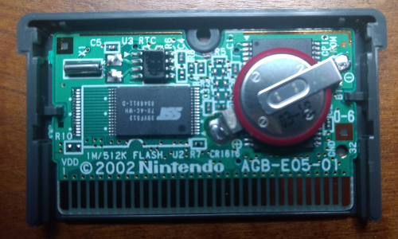
The RTC is up to the left. The CR1616 battery powers it.
I did recall a brief screen asking for the current time when the main story begins, but I had ignored and later forgotten all about it since I had no clue why it needed that information. The RTC is in fact used for an "Auto-Adventure" mode where one's Legendz can go off on their own once the GBA is powered off, fighting or exploring to gain experience. These adventures have time limits ranging from a few minutes to over an hour. Once the time limit expires, the adventure is complete, and the Legendz is rewarded with experience points. Depending on how long the little journey lasted, the Legendz will gather a greater number of points. Leave Hexadragon alone for a few days, for example, and he might go from level 1 to 15 with no involvement from the player. The Auto-Adventure can only be finished once the game is turned off or not actively played. If it's turned on, the countdown still runs, however, the main story is inaccessible unless the adventure is canceled (nixing any experience points). It's a cute gimmick to get kids to put down the game for a while and maybe go play outside or something.
This Auto-Adventure uses the Soul Doll Adapter for 3 things. First, it reads the Soul Doll to verify which Legendz a player wants to train. Then it writes data back to the Soul Doll, presumably to let the game know it was on an adventure. Finally, once the time limit has expired, the Soul Doll is again read, and updated. GBE+ couldn't even handle the beginning part. The data for the Soul Dollz were incorrect and denied. Auto-Adventure requires that the owner of the Soul Doll matches the player's name. In Soul Doll Initialization mode, this isn't necessary since it's just querying basic details about the Legendz. The Reborn mode, where Soul Dollz are turned into Legendz for the player's team, merely wants the owner name field to be blank. All of the data dumps I used had blank name fields, so they worked in either of the aformentioned modes, but not Auto-Adventure. Reborn mode lets players name their Legendz, and during this phase, the game uses the adapter to write back the nickname and the owner's name. GBE+ ignored that part, thus making Auto-Adventure mode inaccessible. To get it working, I had to find some way to write back data to the Soul Doll.
Doing it the write way
So, to summarize, GBE+ could read Soul Dollz, but not write to them, which was a pretty big issue. I assumed all I had to do was capture more data from the ROM hacks I made and study them to find out how the adapter wrote things. I invested a couple of weeks going over all sorts of transmissions I'd recorded between the GBA and the adapter. Even with that much effort, I had no progress. It became clear to me that I needed to emulate the Soul Doll Adapter properly. Although reading worked, it was basically copying+pasting every transfer from the adapter and feeding it to the emulated GBA. That's pretty high-level emulation, very similar to how I handle the Pokemon Pikachu 2, Pocket Sakura, or the Full Changer from Zok Zok Heroes. I'm not actually emulating the underlying hardware of these accessories, just the specific input the console would expect from such a device. That approach works well enough for things that communicate in a fairly one-way or linear manner, but it's difficult when these items depend on storing any data coming back from a Game Boy. At that point, understanding the protocol is the only way to interpret what data is being sent.
Unfortunately, I only had the faintest clue how the protocol worked for reading, and trying to piece together how to do writing was turning into a dead-end. I decided it was time to take extreme measures. Since I couldn't reverse-engineer it all by simply examining the transmission data, I felt the best course of action was to find documentation on the hardware inside the Soul Dollz. The figurines themselves have chips that store their information, and most chips have manuals or "datasheets" from their manufacturer explaining everything about their operation. I reasoned that the GBA had to be transmitting data that followed whatever format was written in that manual. Finding the appropiate datasheet online is generally easy enough these days, but I had to know the specific model before I could search for anything.
I'd read that the Soul Dollz use 1KB of EEPROM, yet a number of such EEPROM controllers from multiple companies exist. While that fact helped me narrow the possibilities, I still had too many leads to cover. I needed to find the exact make of the EEPROM firsthand, so I got physical and disassembled one of my Soul Dollz. The chip sits at the base of each Soul Doll, secured by two small screws. Loosening them up provides access to the gold contact pins and a tiny PCB. On the board sat the EEPROM controller that I wanted to ID. As usual for most electronics, the controller had a label printed on it. Although they look like a random assortment of letters and numbers, they actually represent the chip's name. I could barely read the almost microscopic font; thankfully my phone's camera could zoom in close enough without losing focus. After looking carefully at the pictures and some quick browsing, I determined that the chip was called a 24LC08, a serial EEPROM controller made by Microchip Technology. Google provided plenty of datasheets as downloadable PDFs. Armed with this knowledge, I could now fully examine the protocol between the GBA and the Soul Doll Adapter.
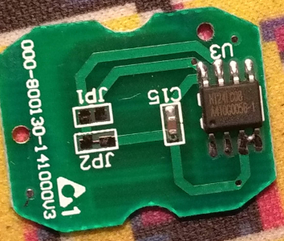
Taking matters into my own hands, I had to pull apart a Soul Doll to ID the parts used inside
The 24LC08 has only a few simple commands. It can read any byte at any address, do sequential reads, write 1 byte to any address, and write 16 sequential bytes to a page. Each command uses bytes known as slave addresses and a word addresses. A slave address byte indicates an incoming command, the type of command, and the 2 most significant bits of the memory address to access. The word address byte functions as the other 8 bits of the memory address. Together, they tell the EEPROM controller whether it needs to read from or write to memory at a given 10-bit address.
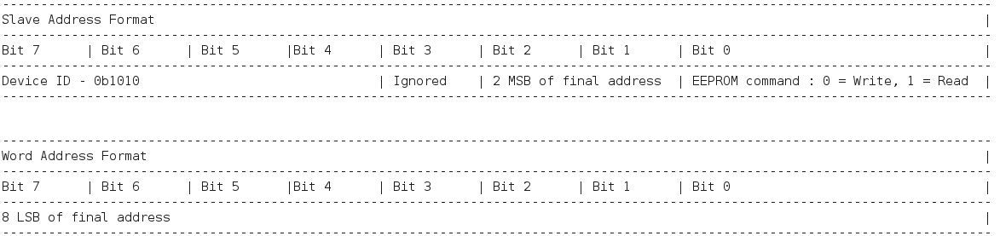
Figure 0 - Slave and word address formats for the 24LC08
The documentation talks about these slave and word address bytes as a series of zeroes and ones, since the 24LC08 deals with input and output 1 bit at a time. However, the data I had captured between the GBA and the Soul Doll Adapter did not immediately reflect this. The GBA's General Purpose mode uses a memory-mapped register called RCNT to trasmit and receive data across the link port. Although it's a 16-bit register, only the lower half - i.e. the first byte - is relevant. My ROM hack for the Legendz games merely recorded every one of those bytes any time a transmission occurred. GBE+ in turn reads a file and gives the emulated GBA these same values any time it requests a transmission. As I stated earlier, the process falls under the category of high-level emulation, since it only plays back a recording at the right time. The data from RCNT didn't look like an exact fit for what the 24LC08 wanted. This is a sample of the hexadecimal data I had to deal with:
AD AF A7 A5 AD AF AF AD AD AF AF AD AD AF AF AD
AD AF AF AD AD AF AF AD AD AF AF AD AD AF AF AD
AD AF AF AD AD AF AF AD AD AF A7 A5 A5 A7 AF AD
AD AF A7 A5 AD AF AF AD A5 A7 A7 A5 AD AF AF AD
A5 A7 A7 A5 A5 A7 A7 A5 AD AF AF AD AD AF AF AD
A5 A7 A7 A5 25 27 27 25 AD AF AF AD A5 A7 A7 A5
A5 A7 A7 A5 A5 A7 A7 A5 A5 A7 A7 A5 A5 A7 A7 A5
A5 A7 A7 A5 A5 A7 A7 A5 25 27 27 25 AD AF A7 A5
AD AF AF AD A5 A7 A7 A5 AD AF AF AD A5 A7 A7 A5
A5 A7 A7 A5 AD AF AF AD AD AF AF AD AD AF AF AD
Figure 1 - Data pulled from Soul Doll, represented by values of the RCNT register.
Yeah... wait, what? Well, I knew that when the data goes from values of Ax to 2x, that acts as a sort of stop or start signal for a command, but the commands themselves appeared unintelligible. Bit 3 of every RCNT byte is the Serial Out bit, meaning the data sent from the GBA to the adapter. That should have been the input the EEPROM controller wanted. So I tried looking at the data as only every value of Bit 3:
01 01 00 00 01 01 01 01 01 01 01 01 01 01 01 01
01 01 01 01 01 01 01 01 01 01 01 01 01 01 01 01
01 01 01 01 01 01 01 01 01 01 00 00 00 00 01 01
01 01 00 00 01 01 01 01 00 00 00 00 01 01 01 01
00 00 00 00 00 00 00 00 01 01 01 01 01 01 01 01
00 00 00 00 00 00 00 00 01 01 01 01 00 00 00 00
00 00 00 00 00 00 00 00 00 00 00 00 00 00 00 00
00 00 00 00 00 00 00 00 00 00 00 00 01 01 00 00
01 01 01 01 00 00 00 00 01 01 01 01 00 00 00 00
00 00 00 00 01 01 01 01 01 01 01 01 01 01 01 01
Figure 2 - Bit 3 of every byte from RCNT values.
Of course! It was all so clear now. I just had to blink twice, cross my eyes, and hold my thumb out. Then it all made sense! Or not... I still couldn't make out what was going on. Not at first. It took a lot effort to see what was happening here. Let's try this again, but now with some color coding:
01 01 00 00 | 01 01 01 01 | 01 01 01 01 | 01 01 01 01
01 01 01 01 | 01 01 01 01 | 01 01 01 01 | 01 01 01 01
01 01 01 01 | 01 01 01 01 | 01 01 00 00 | 00 00 01 01
01 01 00 00 | 01 01 01 01 | 00 00 00 00 | 01 01 01 01
00 00 00 00 | 00 00 00 00 | 01 01 01 01 | 01 01 01 01
00 00 00 00 | 00 00 00 00 | 01 01 01 01 | 00 00 00 00
00 00 00 00 | 00 00 00 00 | 00 00 00 00 | 00 00 00 00
00 00 00 00 | 00 00 00 00 | 00 00 00 00 | 01 01 00 00
01 01 01 01 | 00 00 00 00 | 01 01 01 01 | 00 00 00 00
00 00 00 00 | 01 01 01 01 | 01 01 01 01 | 01 01 01 01
Figure 3 - Bit 3 of every byte from RCNT values with highlights.
I quickly noticed that the GBA effectively has to send 4 transfers for every input bit the 24LCO08 needs. The above data reads best when grouped by 4s. The red portions baffled me, however the green portions were those start and stop signals. They seemed to mark whenever a command or a parameter ended and needed to be processed by the 24LC08. Surprisingly, the last 32 transfers before each signal were the slave and word addresses (blue and yellow, respectively). The above sample tells the 24LC08 to read from random access (arbitrarily read any location). Notice that the data holds two slave addresses. The first slave address is in fact a dummy write command. The controller ignores the write, and instead triggers the reading process once the GBA transfers the second slave address. From there, the EEPROM returns data from memory. Each bit still consists of 4 transfers, so there are 32 in total. Afterwards another stop signal comes along (not shown above however).
It may sound odd to say that a single bit, a 0 or a 1, takes 4 transfers to complete, but that's just how the adapter operates. For slave and word addresses and data, all 4 transfers will typically have the same Bit 3 value, so looking at only one of these transfers is often enough to determine the real bit. Based on the data featured above, the slave address is really 0b10100111 or 0xA6. Bits 4-7 of the slave address are just the device ID of the EEPROM controller, so they aren't used to calculate any memory address. Bit 3 is ignored by the hardware. Bits 1-2 are actually Bits 8-9 of the EEPROM memory address, and Bit 0 is the EEPROM command (1 for read, 0 for write). The word address is 0b10000000 or 0x80. This forms Bits 0-7 of the EEPROM address. The final EEPROM address looks like 0b1110000000 or 0x380. The data returned once again splits each bit into 4 separate transfers, with only Bit 3 of all the transfers holding the bit's value. After the GBA receives a full byte, another stop signal follows, and the process repeats so that additional EEPROM bytes are read sequentially.
The GBA and Soul Doll Adapter seem to have a somewhat convoluted method of talking to the 24LC08. It's definitely not as simple as sending 1 transfer for 1 bit, but perhaps the differences in the GBA hardware forced Bandai to design the protocol this way. It may just be a matter of necessity to make the GBA and Soul Doll Adapter compatible with the type of EEPROM used for Soul Dollz. Writing is much the same as reading. The GBA transfers a word address first, then a slave address with the EEPROM command bit set to 0. Again, the GBA performs 4 transfers per bit until an entire byte is sent, then it sends another stop signal. Unlike reading, which can access all of EEPROM without having to issue another command, writing only works on 1 to 16 bytes at a time. The 24LC08 supports a "page write" which will let the controller write a maximum 16 entries to memory. Trying to write more will rollover the internal memory pointer, and overwrite previous entries.
Finally able to understand EEPROM data writing, I implemented it in GBE+. This was on January 30th, one of the coldest days on record for the Midwest in the USA (in my generation at least). Work was cancelled that day for me, so instead of freezing outside, I spent a lot of time programming. I also implemented correct EEPROM reading, thus eliminating the cheap hack for Sign of Nekrom. As I suspected earlier, the games really do send different read commands and need proper EEPROM handling as a result. Before I could make much progress, I had to convert the dumps of my Soul Dollz to a more suitable format. Remember, they were just recordings of the RCNT register. Ideally, I needed something that was exactly 1KB and reflected what the real Soul Doll data would look like. The conversion process was relatively painless, and it saved a great deal of space. Previously each dump was exactly 36KB, but now they were just 1024 bytes. After a long day checking everything, GBE+ at last emulated the 24LC08 correctly.
Allz the Dollz!
With EEPROM reading and writing solved, every feature of the Legendz game opened up to GBE+. Soul Dollz could be reborn into Legendz, and players could name them and save that information back to the data dump. Furthermore, the Auto-Adventure mode worked perfectly. GBE+ has long since supported the GBA RTC, so merely enabling that option provides a realistic experience when shutting down the emulator to have Legendz train while a computer's clock runs. Alternatively, GBE+ also lets users manually increment the RTC's values, thereby eliminating the waiting period. For example, one could jump several hours ahead even though only a few seconds have passed. Although it's technically cheating, it was fundamental for my testing. Interestingly enough, if the RTC is disabled before entering Auto-Adventure mode, then re-enabled after shutdown or reboot, it tricks the game into thinking a large amount of time has gone by, leading to massive experience points for a given Legendz (easily going from Level 1 to Level 40+).
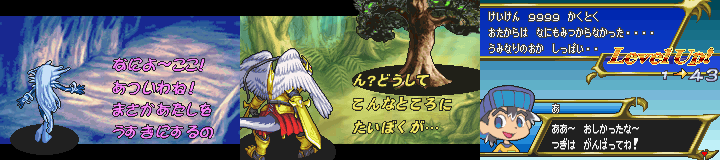
Get stronger Legendz by turning off the game? The only way to win really is not to play!
Once players turn on the game again and after the time limit expires, a brief summary of the adventure plays. Sometimes there are battles; other times it's the player's Legendz talking to another one, and some adventures feature discovery. From there, the Legendz earns experience points based on the total time spent in this mode. Both Isle of Trial and Sign of Nekrom worked in GBE+, so mission accomplished, right? Right? For the most part yes, however, I was still intrigued by the prospect of artificially gaining more Soul Dollz. With the new 1KB format for Soul Doll data dumps, I could manipulate the data in a hex editor far more easily than ever before. I assumed that only a few bytes would act as the ID of the Soul Doll. Change those, and a new Legendz would come. Instead of shuffling around chunks of data, I only had to edit a couple of hexadecimal values.
By overwriting parts of the 1KB dump with zeroes, I could see what data was important or ignored during the Soul Doll Initialization or Reborn process. Eventually, I narrowed the Soul Doll ID down to exactly 1 byte at 0x302. Modify that, and Hexadragon could suddenly become a Mermaid, a Fire Giant, or a Leviathan. After cycling through many values, I artifically created data sets for another 19 Soul Dollz, bringing my total count to 74 out of 103. I never thought I'd get so high a percentage given the sheer number of Soul Dollz available. The ratio might be even higher considering that some physical Soul Dollz might produce the same Legendz to appear in the games, just with slightly different stats. There are at least 3 versions of the Windragon Soul Doll (A, B, and C), but quite possibly they are not seen as different by Isle of Trial or Sign of Nekrom. In any case, a vast majority of all possible Legendz are now available via emulation.
Now you too can try your hand at raising Legendz!
The legend continues...
And so, another unemulated device has been conquered. I'd really like to take the time and thank the Legendz fan-community for their assistance! Everyone was welcoming, friendly, and quite helpful with my questions. It's been 15 years since the franchise launched, and even though Bandai may no longer care about Legendz, a number of people are devoted to keeping it alive. I encourage anyone willing to learn more to drop by their Discord channel. Legendz might never have been in the same league as Pokemon, Digimon, or anything like that, but it had a large impact on video game history. It proved that companies could successfully link toy-like figures to games, not only as collectible items, but as a feature that genuinely enhanced the gameplay. In this regard, Bandai was a pioneer, excelling where Takara could not and beating Nintendo to the market by almost a decade.
Unfortunately, time has not been too kind to what Bandai created. It was almost forgotten, lost to obscurity. Without efforts such as these, the GBA titles and the Soul Doll Adapter might have been swept aside altogether, remembered by no more than a handful of gamers. Eventually, the hardware will fail. The adapters could get lost or broken. The EEPROM in the Soul Dollz has a long, but ultimately limited lifespan. These games and their unique method of playing could have become but a small footnote of some book or article, nothing more than a mere legend. Well, thankfully, none of that happened. We'll still be enjoying the Legendz games for years and years to come with the power of emulation.
So what's next on the horizon? What else is in store for me in 2019? The year's barely 2 months in and I'm ready to tackle more. I mean, there's always just so much to do. Hmm... As I said last time, there's still more Mobile Adapter GB games to go after. And then there's that one weird Tamagotchi cart for the Game Boy. Well, truth be told, I gave my word to that I'd do my best to help out reverse-engineering some of those Battle Chip accessories used for the Megaman Battle Network games. As I write this now, I've already been researching that matter for over a week, with minor progress so far. Endrift, the author of mGBA, and I are hard at work getting these things emulated. Teamwork makes the dream work, so hopefully with two people on the case, we'll solve the mysteries of more undocumented GBA hardware.